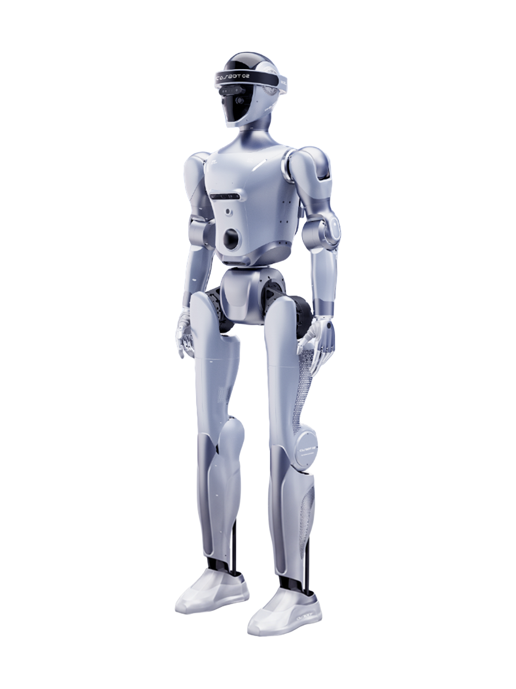

CASBOT 02
Other variants Standard · EDU
Figures below are for CASBOT 02.
A humanoid robot from China, first released 2025.
Sources retrieved: 28 September 2026 (A)
- Status
- In production
- Applications
- Intended use, per the manufacturer
- CASBOT 02 uses a large language model for multilingual natural-language interaction, with face tracking and voice-recognition features aimed at home companionship; the EDU configuration additionally ships with a general secondary-development and teaching kit.Source and note: Intended use, per the manufacturerA casbot.tech/product/02 · Retrieved 28 September 2026
- Indicative price
- Not stated

- Person
175 cm68.9 in - Height 163 cm64.2 in
Width 51 cm20.1 in
Manufacturer's own photo.
Drawn at one scale next to a 175 cm person, from the figures the maker states: height 163 cm and width 51 cm.Drawn at one scale next to a 68.9 in person, from the figures the maker states, converted to inches: height 64.2 in and width 20.1 in.
Specifications
12 of 33 stated 21 not stated
21 fields hidden
How to read the figuresShow guideClose
- not statedNo source
- noStated by a source
- 0Reported as zero
- ASource
- A*Source with a caveat (select it)
- CERecords only what the manufacturer states regarding CE marking.
Select a source marker for source details and notes.
Physical8/14 disclosed
Power1/5 disclosed
Sensing and autonomy3/6 disclosed
Payload and expansion0/3 disclosed
Commercial0/1 disclosed
Compliance & certifications0/4 disclosed
Against the field
Each strip holds every robot of this type in the guide that states the figure, one bar per group of values. Further right means a larger figure, not a better robot. A taller bar means more robots in that group.
Height
163cm64.2inOur conversion from 163 cm. The manufacturer does not state an imperial figure itself, so the conversion has no source of its own.
150 humanoids state a height
88 state a higher figure, 58 a lower one. 1 more states exactly the same figure. 2 state only a bound (≥ or ≤) and are not ranked. Neo1 lies beyond the end of the axis and is drawn at its edge as an open bar.
Weight
approximately 50kgapproximately 110lbOur conversion from 50 kg. The manufacturer does not state an imperial figure itself, so the conversion has no source of its own.
147 humanoids state a weight
76 state a higher figure, 59 a lower one. 1 states a range that includes this figure. 10 state only a bound (≥ or ≤) and are not ranked. Log scale: each step along the axis multiplies the value.
Degrees of freedom
at least 37DoF
136 humanoids state degrees of freedom
CASBOT 02 states a lower limit, not one figure, so it is shown open-ended and not ranked against the others. 12 state only a bound (≥ or ≤) and are not ranked. Protoclone V1 lies beyond the end of the axis and is drawn at its edge as an open bar.
Runtime
approximately 90minNote: load condition not stated
100 humanoids state a runtime
73 state a higher figure, 2 a lower one. 5 more state exactly the same figure. 2 state a range that includes this figure. 17 state only a bound (≥ or ≤) and are not ranked.
Max speed
3.6km/h2.24mphOur conversion from 1 m/s. The manufacturer does not state an imperial figure itself, so the conversion has no source of its own.
106 humanoids state a top speed
62 state a higher figure, 10 a lower one. 4 more state exactly the same figure. 29 state only a bound (≥ or ≤) and are not ranked.
Notes
CASBOT 02 is offered in two configurations, Standard and EDU; the figures given are for the Standard configuration. The EDU configuration adds a lidar unit, two extra RGBD cameras (3 vs 1 on Standard), indoor navigation, and wireless charging, and weighs about 2 kg more (approx. 52 kg vs approx. 50 kg).
Single-arm payload is stated as 1.5 kg; no whole-body payload figure (walking or standing) is given anywhere on the page.
Maximum joint torque is stated as 150 N.m, and ambient humidity as 25%-85% (non-condensing).
Both configurations are controlled by handheld joystick, teleoperation, or a companion app; the EDU configuration additionally supports autonomous indoor navigation with obstacle avoidance, which Standard does not.
36Kr reported on 26 June 2025 that CASBOT 02 had been released that June (translated from the Chinese).
CASBOT's own product page for the 02 carries a buy-now button that links to an online shop listing, and says the product does not support 7-day no-reason returns (translated from the Chinese).
Sources
One line per source, not per figure: a source has one retrieval date.
- Acasbot.tech/product/02Main source. Retrieved 28 September 2026